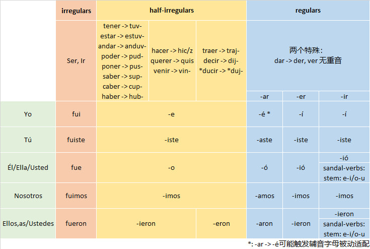

简单过去时 Pretérito
本章我们学习另一个关于过去的时态——简单过去时（Pretérito）。它对应英语的过去时里面的did类的表达。
- Jugué al fútbol esta mañana. (I played football this morning. 我今天上午踢了足球。)
Pretérito跟上一章学习的Imperfecto最大的区别是，这个时态的表达里面包含了动作完成的信息。例如上面句子的中文翻译就明确包含表示动作完成的“了”。正因为pretérito时态明确包含了动作完成的信息，所以在实际使用当中它跟现在完成时（have done）的语法功能是有重合的。即，我们完全可以用简单过去时来替代现在完成时的表达。口语中尤其如此。
我们还是先学习“基础组件”——pretérito动词变位。在掌握了基础组件之后，我们再学习pretérito的使用。
Pretérito的动词变位
Pretérito的规则动词变位如下表：
| -ar | -er/-ir | |
|---|---|---|
| Yo | -é | -í |
| Tú | -aste | -íste |
| Él/Ella/Usted | -ó | -ió |
| Nosotros, as | -amos | -imos |
| Ellos, as/Ustedes | -aron | -ieron |
不同于presente（陈述式现在时）变位中-ar/-er/-ir动词分别使用三套不同的词尾，pretérito变位将-er和-ir动词合并到一起了。同时注意到的nosotros的pretérito变位跟presente变位是一样的（-eri/-ir合并了）。
注意-ar动词的yo变位替换（-ar -> -é）是一个跨组替换（a/o/u组 -> e/i组），这就有可能触发辅音字母被动适配（例如，tocar -> toqué）。
Pretérito Matrix
Pretérito同样存在大量不规则或“半规则”动词。我将pretérito的全部变位规则浓缩到下面这张简单过去时变位Matrix。只要记住了这个“Pretérito Matrix”，就记住了pretérito的全部变位规则。这是本教程的第二个“Matrix”。

1. 完全不规则动词
Pretérito时态的完全不规则动词只有两个，ser和ir，且它们共用同一套变位：
| Ser/Ir | |
|---|---|
| Yo | fui |
| Tú | fuiste |
| Él/Ella/Usted | fue |
| Nosotros, as | fuimos |
| Ellos, as/Ustedes | fueron |
2. 半规则动词（U/I/J-Groups）
U/I/J-Groups是三组动词，它们的pretérito变位规则可以总结为两条：
词根（stem）要进行转换；
使用一套不同于标准变位的词尾（suffix），且不区分-ar/-er/-ir。
词根转换见下表
| U-group | 词根转换 | I-group | 词根转换 | J-group | 词根转换 |
|---|---|---|---|---|---|
| estar | estuv- | hacer | hic/z- | traer | traj- |
| haber | hub- | querer | quis- | decir | dij- |
| tener | tuv- | venir | vin- | *ducir | *duj- |
| andar | anduv- | ||||
| poder | pud- | ||||
| poner | pus- | ||||
| saber | sup- | ||||
| caber | cup- |
注意表中的“ducir”是指ducir应做基础词来理解，即所有ducir的派生词（符合\ducir模式的动词）都应归为J-group。
转换后的词根后面接的统一的词尾：
| Pretérito变位词尾 | 例子：estar | hacer | decir | |
|---|---|---|---|---|
| Yo | -e | estuve | hice | dije |
| Tú | -iste | estuviste | hiciste | dijiste |
| Él/Ella/Usted | -o | estuvo | hizo | dijo |
| Nosotros, as | -imos | estuvimos | hicimos | dijimos |
| Ellos, as/Ustedes | -ieron（但j会吞掉i） | estuvieron | hicieron | dijeron |
注意hacer的Él变位触发了辅音字母被动适配。你完全可以认为hizo并不是什么“不规则变位”，而是完全符合U/I/J-Groups规则，只不过触发了一条更基本的原则——辅音字母被动适配。
3. Sandal-verbs
在Presente动词变位中有一类要进行元音替换（stem-change）的boot verbs，对应到pretérito里面则是sandal verbs（凉鞋动词）。Sandal verbs里面只有第三人称（单数和复数）变位才进行元音替换，即涉及到的变位是下图中的黄色部分——像sandal，所以叫sandal verbs.
| Yo | Nosotros |
| Tú | Vosotros |
| Él/Ella/Usted | Ellos/Ellas/Ustedes |
那么sandal-verbs跟boot-verbs这两组动词是什么关系呢？sandal-verbs其实就是-ir boot-verbs除去属于U/I/J-Groups的部分。后者其实总共就2个基础词（venir/decir）以及所有由这2个基础词派生出来的派生词。
Sandal-verbs的stem-change也较为简单，没有元音裂变，只有两种简单替换（都是较强的元音弱化为较弱的元音）：
e -> i
o -> u
以下表格列出了常见sandal-verbs的pretérito变位，其中o->u组包括了这一组全部的基础词（其它皆为派生词）。
| e->i 动词 | Él/Ella 变位 | Ellos/Ellas 变位 | o->u 动词 | Él/Ella 变位 | Ellos/Ellas 变位 |
|---|---|---|---|---|---|
| pedir (请求) | pidió | pidieron | dormir (睡觉) | durmió | durmieron |
| despedir (告别/解雇) | despidió | despidieron | morir (死) | murió | murieron |
| medir (测量) | midió | midieron | |||
| seguir (跟随/继续) | siguió | siguieron | |||
| conseguir (获得) | consiguió | consiguieron | |||
| sentir (感觉) | sintió | sintieron | |||
| mentir (撒谎) | mintió | mintieron | |||
| divertir(se) (娱乐) | divirtió | divirtieron | |||
| preferir (更喜欢) | prefirió | prefirieron | |||
| sugerir (建议) | sugirió | sugirieron | |||
| repetir (重复) | repitió | repitieron | |||
| servir (服务) | sirvió | sirvieron | |||
| vestir (穿衣) | vistió | vistieron | |||
| elegir (选择) | eligió | eligieron | |||
| freír(油炸) | frio | frieron | |||
| reír(笑) | rio | rieron | |||
| sonreír(微笑) | sonrio | sonrieron |
注意最后三行的e在替换成i之后，跟词尾的i发生了坍缩（ii -> i）。
为了展示派生词的变位方式永远跟基础词相同，表中列出了两组“基础词-派生词对”：pedir和despedir，seguir和conseguir。但这几个基础的派生词绝不仅限于这几个，比如repetir和competir。但也有形式上属于pedir但其实并不是pedir的派生词，比如expedir和expedir，但是只要在形式上符合\pedir这个特征，它的变位就跟pedir一样。
在以上规则都被执行之后，剩下的就是标准的按照-ar和-er/-ir两组词尾的标准变位规则。
我们再次将简单过去时时变位Matrix列在下面，并且梳理一遍“Pretérito Matrix”的使用方法。
要得到任何一个动词的简单现在时变位，我们只需要从左到右执行“Pretérito Matrix”的逻辑：
首先，如果是ser或者ir，则直接用不规则变位（fui/fuiste/fue/fuimos/fueron）；
然后看这个词是否属于U/I/J-groups（总共14个）。如果是，则按照U/I/J-groups的变位规则：先进行词根替换，然后做统一的词尾替换。但是注意J-group的词根最后的j会吞掉-ieron的i，所以实际上J-group的Ellos变位词尾是eron。
然后如果我们需要的是第三人称（El或者Ellos）变位，而这个词又属于sandal-verb，那么我们则要执行stem-change：e -> i 或者 o -> u；
最后我们执行规则动词变位的词尾替换，但是在yo变位的-ar词尾替换（ar -> é）过程中可能会触发辅音字母被动适配。
Pretérito的使用场景
1. 英语的“did类”过去时
Pretérito其实就是英语的“did类”过去时（不包括“was+adj”过去时或“used+to”结构）的精确对应。注意英语的过去时有一点“混乱”：“was+adj”的表述跟“did类”的表述都归为过去时。但在逻辑上，其实“was+adj”的表述跟过去进行时的表述逻辑更接近，都是在描述过去的一种持续性状态。英语的这种“形式时态”与“逻辑时态”不一致的情况在西班牙语中得到了“纠正”：过去时被分为两种，imperfecto（未完成过去时）描述“背景化的/无边界的” “was+adj” 和 “was+doing”，而pretérito则仅对应英语中的“did类”过去时。具体来说，英语的“did类”过去时是描述过去时间中完成了的一个动作，这也就是西语的pretérito时态的标准使用场景。
| 西语pretérito | 英语“did类”过去时 |
|---|---|
| Comí. | I ate. |
| ¿Comiste? | Did you eat? |
| Vi esta película. | I watched this movie. |
| ¿Viste esta película? | Did you watch this movie? |
Pretérito可以跟imperfecto配合使用来表达两个动作的“交互关系”：
Yo dormía, cuando mi madre llamó. （I was sleeping when my mother called me.)
2. 英语的现在完成时（“have done”）
但正因为pretérito时态（以及英语的“did类”过去时）包含了动作完成的信息，所以它实际上跟现在完成时（对应英语的“have done”）在功能上有一定重叠。这跟英语是类似的：英语的did类过去时跟现在完成时（have done）也有一定重合，实际使用当中也经常用过去时（I did something）来代替现在完成时（I have done something）.
实际使用时，如果要进一步强调这种动作的完成性，可以加一个ya（=already/已经）来加强语气：
| 西语pretérito | 英语did | 等价的英语have done |
|---|---|---|
| Ya comí. | I ate already (so I don't want to eat again). | I have eaten. |
| Ya vi esta película | I watched this movie already. | I have watched this movie. |
跟ya对应的还有用于否定的todavia no (not yet/还没)和用于提问的alguna vez (ever)：
| 西语pretérito | 英语did | 等价的英语have done |
|---|---|---|
| Todavía no comí. | I didn't eat yet. | I have not eaten. |
| ¿Alguna vez viste esta película? | Did you ever watch this movie? | Have you watched this movie? |
3. 被时间定界了的 “was+adj” 状态
注意pretérito并非完全不能对应“was+adj”类的过去时，但是当用pretérito来描述过去状态时，一般意味着这种状态有一个明确的时间边界。
| Imperfecto v.s. Pretérito | 英语 | Note |
|---|---|---|
| Yo estaba enfermo ayer. | I was sick yesterday. | 只强调昨天病了，不包含开始或结束信息，今天情况未知 |
| Yo estuve enfermo ayer. | I was sick yesterday. | "我病了"是一个历史事件（包含在ayer这个时间边界之中），今天已经好了 |
注意上表中西语的imperfecto表述和pretérito表述所对应的直接英语翻译完全一样，也就是说这两种表述包含的信息差别在英语翻译中消失了（必须通过上下文来推测）。
Imperfecto v.s. Pretérito
一些动词在Imperfecto时态描述的是“状态”，而在Pretérito时态描述的是“状态的改变”或“动作的执行”，而这种不同实际上导致了语义的变化：
| 动词 | Imperfecto (描述状态) | Pretérito (动作/变化) | 逻辑区别 |
|---|---|---|---|
| conocer | knew (认识/了解) | met (初次见面/结识) | 知道 vs. 变成了认识的状态 |
| saber | knew (知道事实) | found out (得知/发现) | 懂 vs. 获取了信息的瞬间 |
| poder | could (有能力) | managed to / succeeded (做成了) | 能做 vs. 真的做到了 |
| querer | wanted (想) | tried (试图去做了) | 心理活动 vs. 付诸行动 |
| no querer | didn't want (不想) | refused (拒绝) | 没心情 vs. 直接推掉了 |